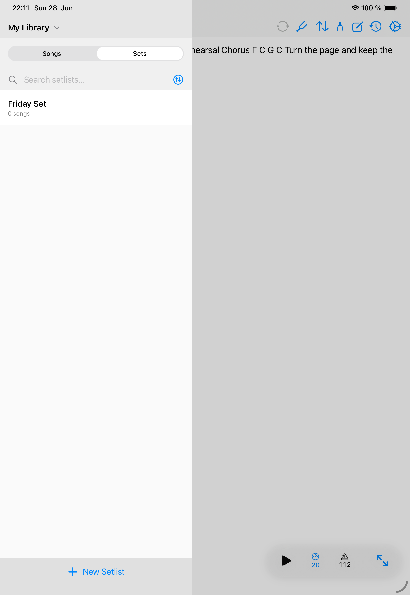

Shows
Setlists
Setlists turn your library into the order you need for rehearsal, worship, theater, lessons, or a gig.

Create a setlist
- Choose the library or band context for the setlist.
- Create a new setlist and name it clearly.
- Add a performance date when the set is tied to an event.
- Add songs from the selected library.
- Drag songs into the order you will play them.
Slot details
- Add slot notes for intros, cues, transitions, capo reminders, or leader notes.
- Use a per-slot transpose override when one song needs a different key for one set.
- Use multi-select actions when exporting or deleting several slots from the panel.
Lifecycle
Rename, duplicate, or delete setlists as your repertoire changes. Duplicate a setlist when a new show starts from a previous night but should diverge later.